Day 1 · Tue, Jun 18
Tokyo Lake Kawaguchi
200 km
I picked up a Moto Guzzi in the morning to ride to the Mt. Fuji area, both excited and nervous. My biggest worry was getting out of the middle of Tokyo, where the shop is, but the Ninja Tours team escorted me to the edge of the city and onto the expressway. Riding on the other side of the road was a challenge, but orderly traffic and the good manners of local drivers made it easy to get used to.
On the way I stopped in Yamanashi, about two hours west of Tokyo, to meet a friend at Budo no Oka (Grape Hill). The area is like the Napa Valley of Japan: Cabernet Sauvignon, Chardonnay and Merlot alongside local grapes like Koshu and Muscat Bailey A. I had no idea Japan had vineyards!
Hotel Mifujien by 4 pm, in time for an onsen bath to de-stress from a day of firsts: first time on a Moto Guzzi, first time on Japanese roads. A 12.5-tatami room with its own bath and a view of Mt. Fuji, but I had the communal bath all to myself. Dinner and breakfast in the communal dining hall: small portions of salad, fish, meat and vegetable dishes, and a cold draft beer.
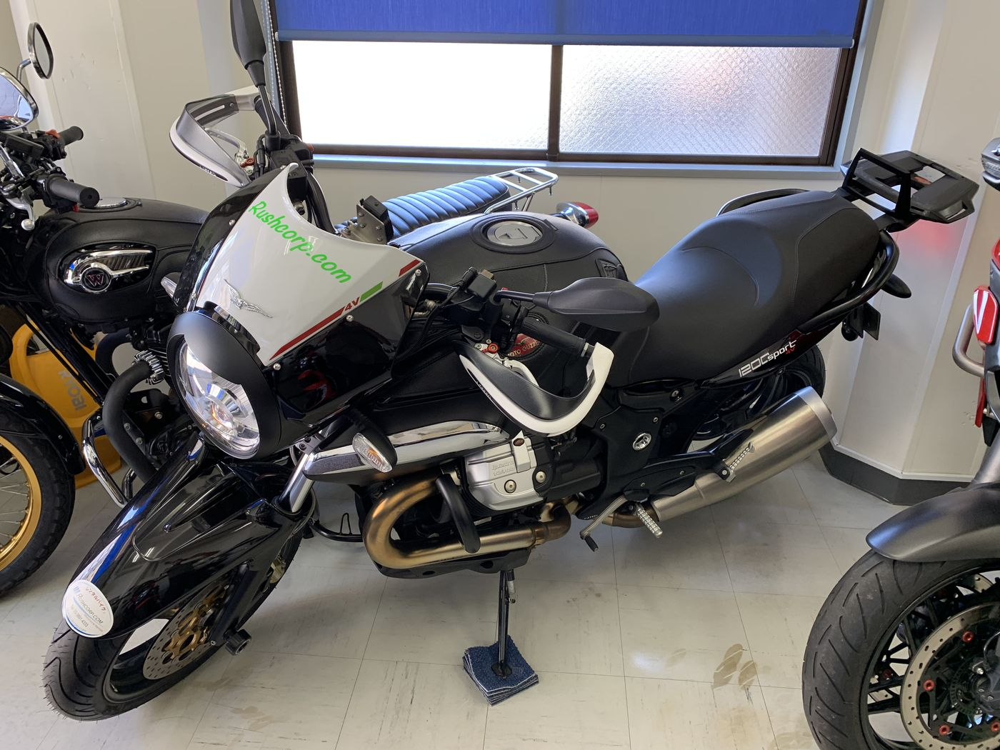
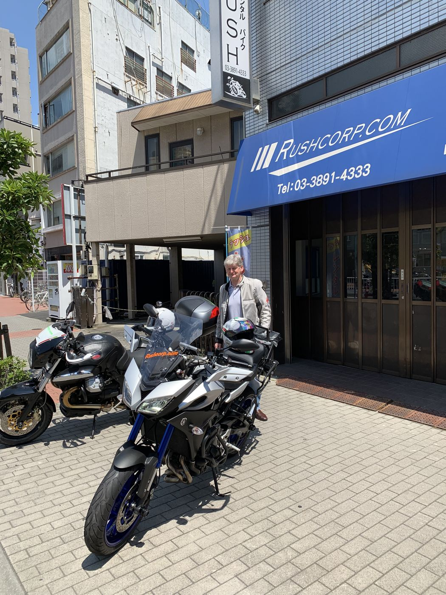
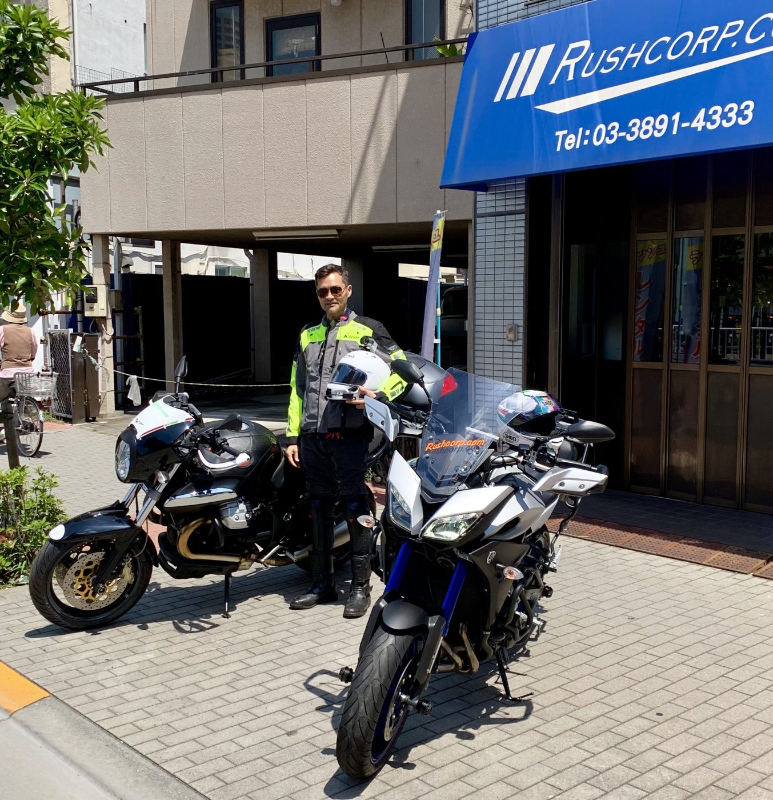
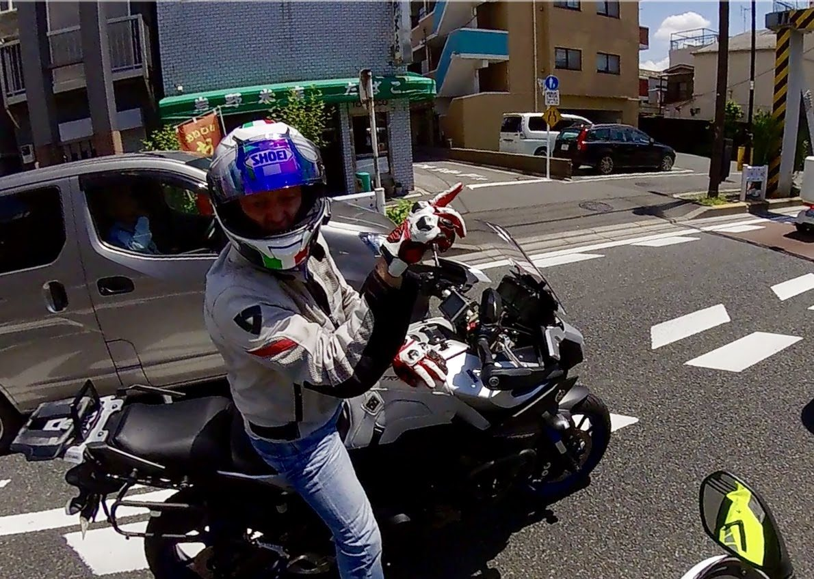
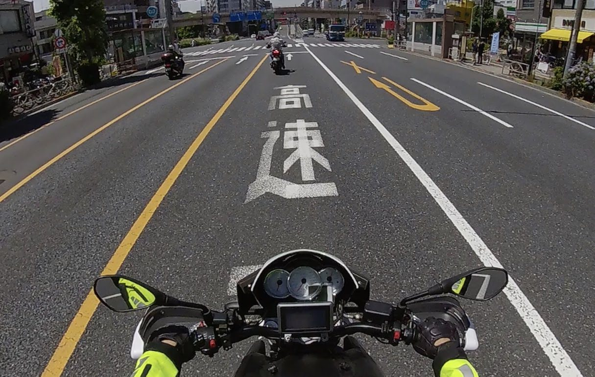
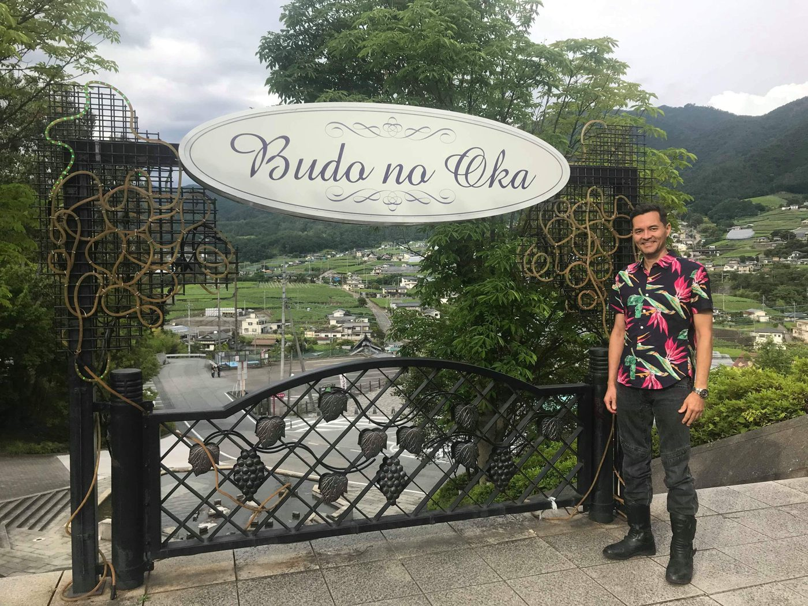
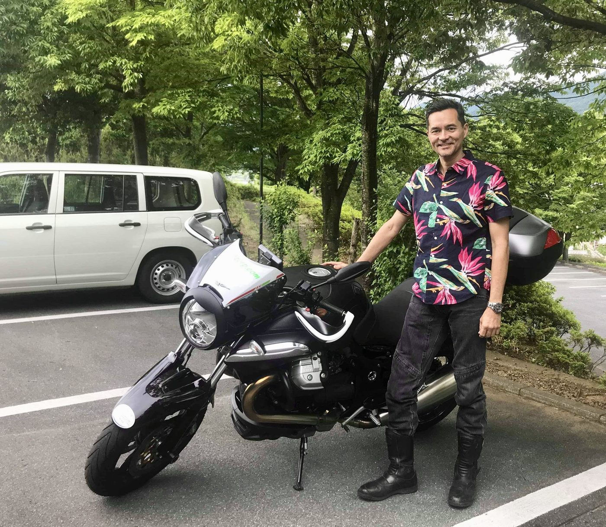
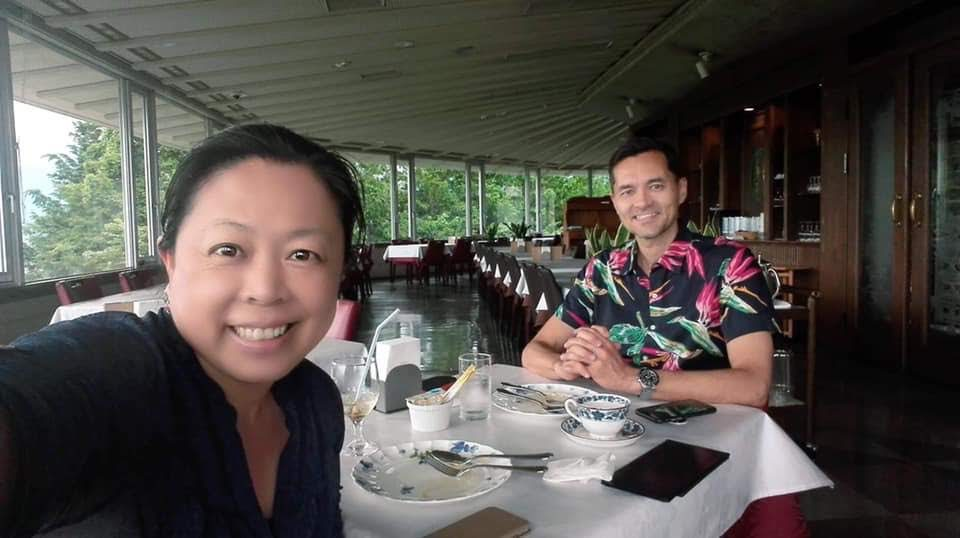
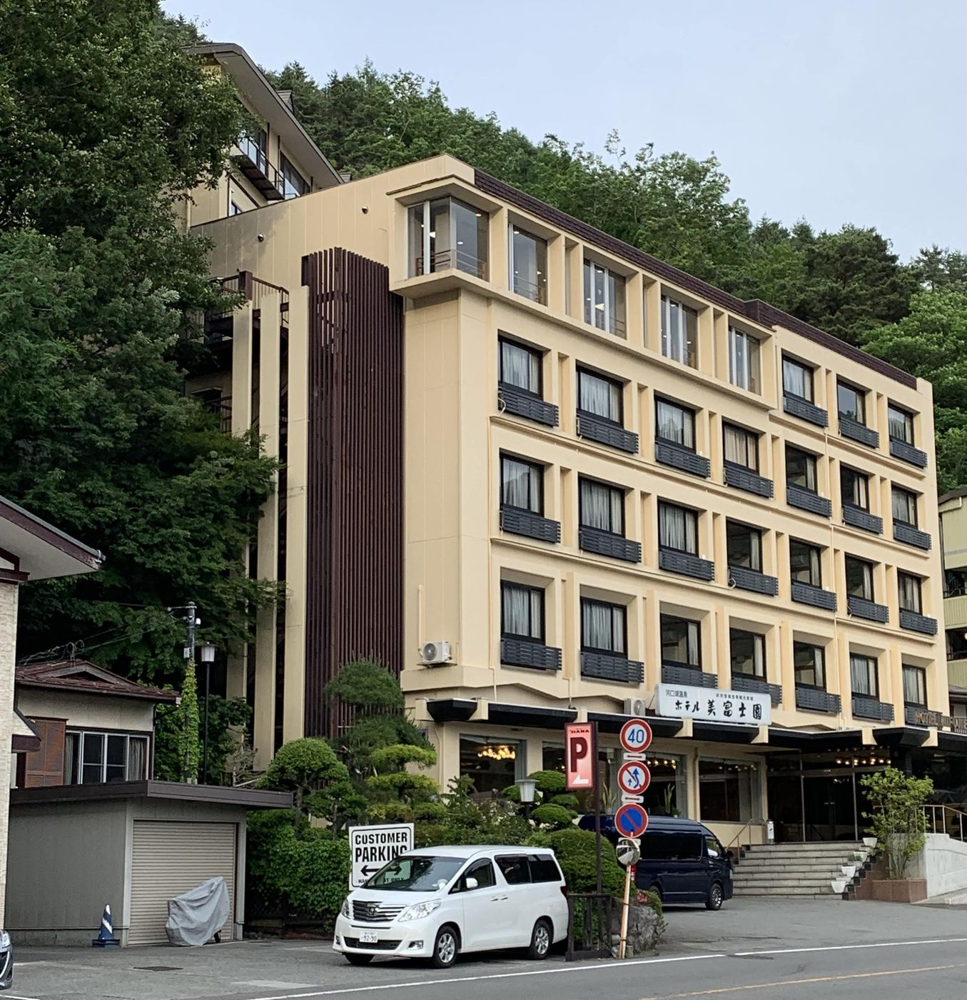
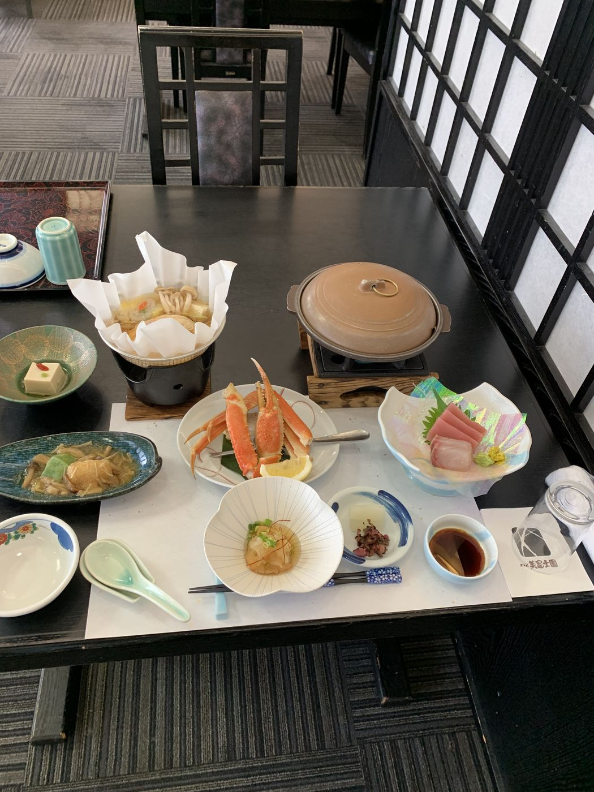
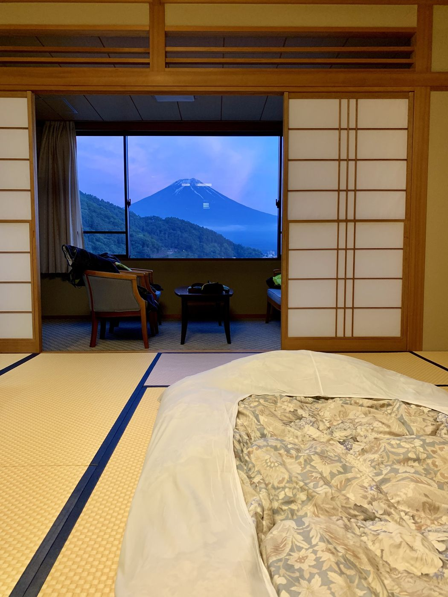
Overnight
Hotel Mifujien, Lake Kawaguchi